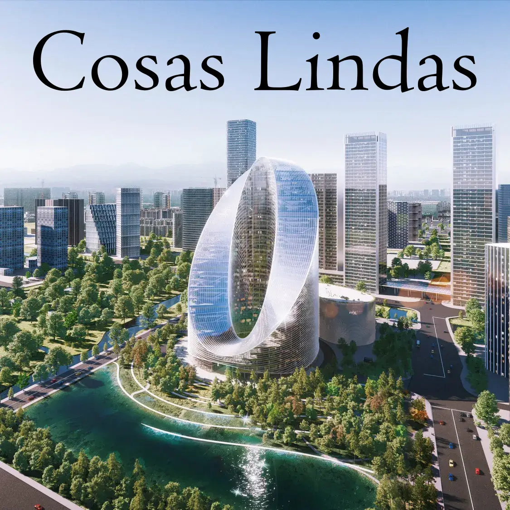
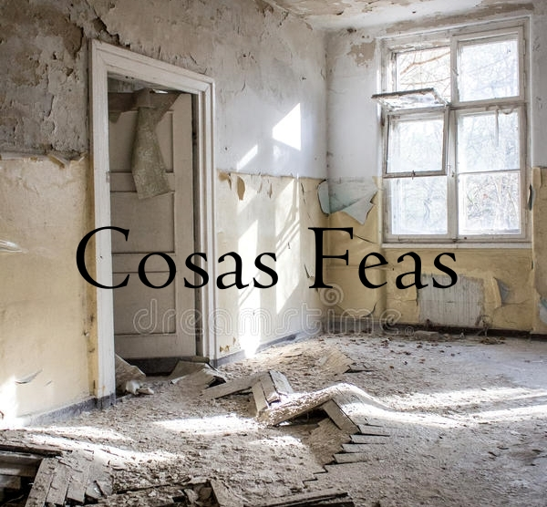

<ion-header  >
  <ion-toolbar>     
    <ion-icon name="log-out-outline" (click)="cerrarSesion()" slot="end" size="large"></ion-icon>
  </ion-toolbar>
</ion-header>

<ngx-spinner bdColor = "rgba(0, 0, 0, 0.8)"
 size = "medium" 
 color = "#fff" 
type = "ball-scale-multiple" >
  <p style="color: white" > Cerrando sesión... </p></ngx-spinner>
   
 <ion-content [fullscreen]="true" >

  <div class="centrado_btn">
  <a  [routerLink]="['/estadisticas']">
    <ion-button color="tertiary" >
      <ion-icon name="stats-chart-outline"></ion-icon>Estadística 
    </ion-button>
  </a>
  
    <a [routerLink]="['/misfotos']">
      <ion-button  color="secondary" >
        <ion-icon name="image-outline">
        </ion-icon>Mis Fotos
      </ion-button>
    </a>
  </div>


  <div class="contenedor4a">
    <a [routerLink]="['/cosaslindas']"></a>
  </div>
  <div class="contenedor4b">
        <a [routerLink]="['/cosasfeas']"></a> 
  </div>
</ion-content>
